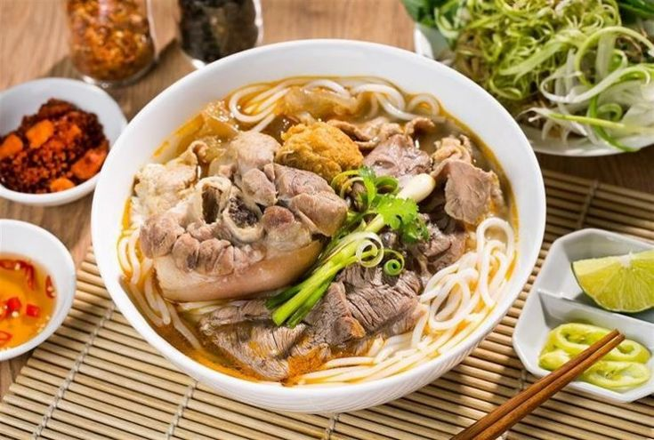

Bun Bo Hue

Description
Bun Bo Hue is a Vietnamese soup that is lesser known than its cousin pho, but just as delicious. Bun Bo Hue literally translates as ‘beef noodle soup from Hue’, paying homage to the city of its conception (you guessed it: Hue in Vietnam).
Bun Bo Hue is an ultra-popular rice noodle dish in Vietnam, and it’s chock full of vermicelli noodles, sliced beef and a spicy, salty, umami-laden broth. Give it a try with this recipe!
Ingredients
- 2 lb (907.2 g) beef shank]
- 2 lb (907.2 g) oxtail
- 2 lb (907.2 g) pork hocks
- 1 lb (453.6 g) Huế style pork sausage
- 1 lb (453.6 g) block of pork blood
Steps
- Clean the meat: Add all meat to a stock pot and enough water to submerge it, bring to a boil. Drain and rinse thoroughly under running water.
- Add the meat, broth, lemongrass and onions to the pot and fill with water almost to the brim. Bring to a boil then drop the heat to medium-high to maintain a low boil. Add the seasoning.
- Let it simmer and periodically check the meats for doneness and remove them as they finish cooking. The pork should be done after about an hour, the beef can vary between 2-3 hours.
- After all the meat has removed, let it cool, then slice it. Adjust seasoning and add water to the broth pot if necessary.
- Make the aromatics & coloring then add it to the pot.
- Boil noodles according to package instructions.
- Assemble your bowl, and serve with herbs and veg on a side platter.